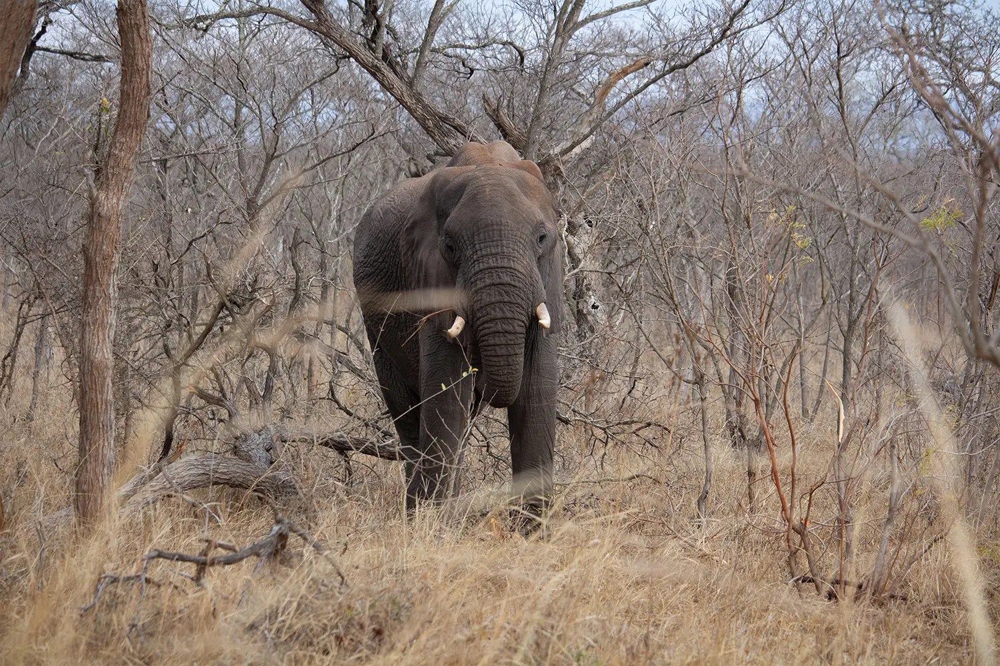
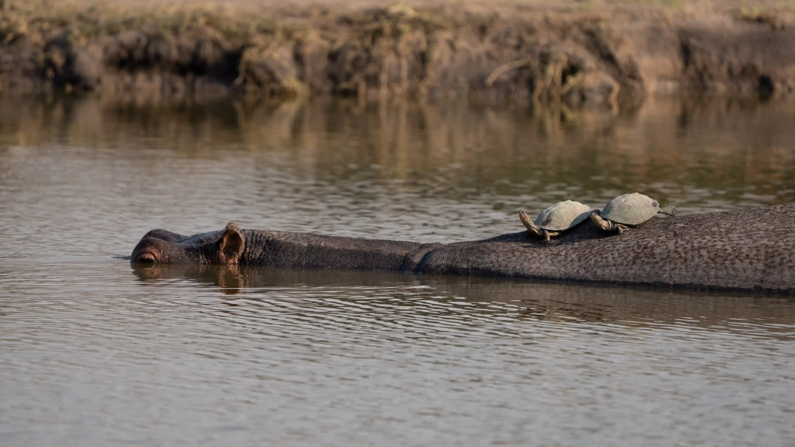
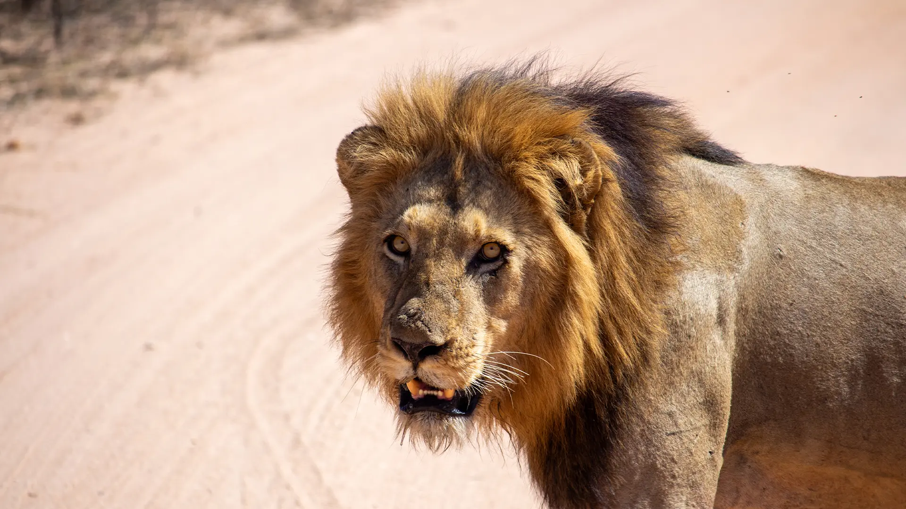
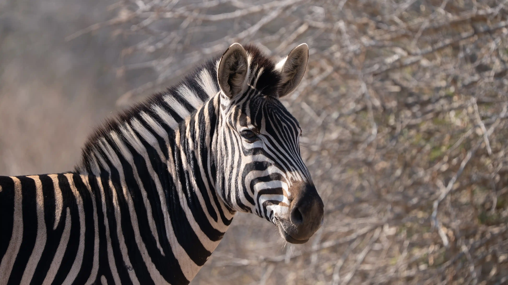
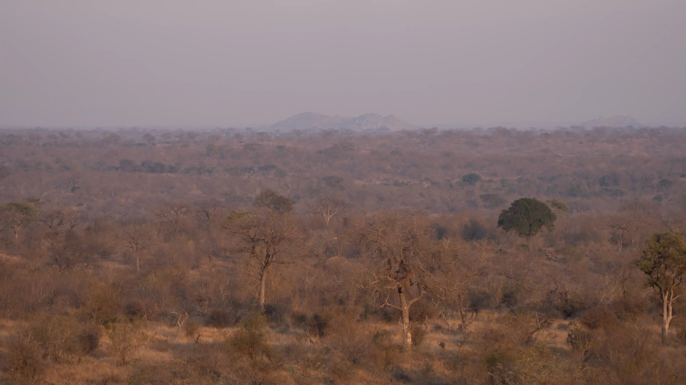
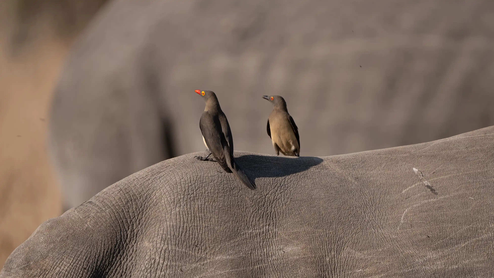
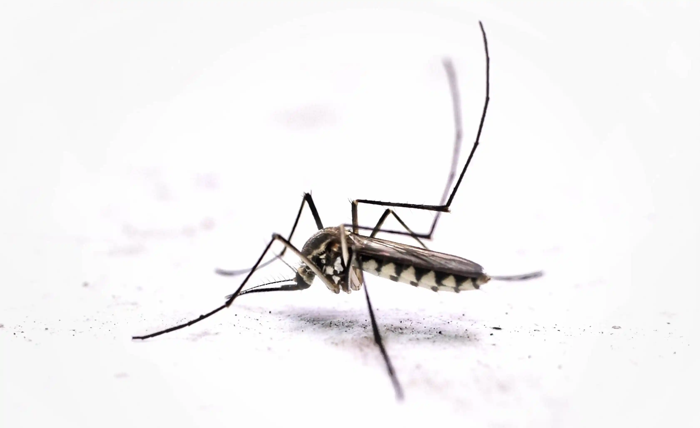

Eugene Safaris
Tailored private safaris in Kruger National Park, guided by Eugene Booysen.
Kruger National Park Safaris
Discover Southern Africa on a private safari crafted around your pace and interests. Eugene Safaris specialises in fully guided safaris in Kruger National Park, offering calm, immersive wildlife experiences far from the crowds.
With expert guiding, deep local knowledge, and a focus on quality sightings, each safari gives you the best opportunity to encounter the Big Five, remarkable birdlife, and the true rhythm of the African wilderness.
Kruger National Park

Classic Safari Packages
Timeless Kruger safaris focused on exceptional wildlife sightings, expert guiding, and flexible itineraries tailored to your pace.
Explore Packages
All Inclusive Safari Packages
Stress-free Kruger safaris with accommodation, meals, park fees, and private guiding all seamlessly arranged for you.
Explore Packages
Photographic Safaris
Dedicated photographic safaris designed for optimal light, positioning, and extended sightings to capture Africa at its best.
Explore PackagesNicole
A trip of a lifetime that exceeded all our expectations! Our personalized tour guide, Eugene, has extensive knowledge of animals and Kruger. This allowed us to explore quieter roads and enjoy sightings where we were often the only vehicle.
Isla
Eugene was amazing! We saw the Big 5 before 9am on our first morning. He was incredibly knowledgeable about the wildlife and knew all the routes like the back of his hand. We also loved our evening braais. Thanks so much for a fantastic safari experience!
Henry
We had an amazing time on safari with Eugene guiding us. He was super knowledgeable about all the animals and birds – we saw the Big 5 and more. He was always up before us preparing the vehicle and finished the day with incredible braais. Highly recommended for anyone wanting an expert guide with relaxed vibes!


Why Choose our Kruger National Park Safaris?
The Kruger National Park Safari is one of Africa's most unforgettable experiences, taking you into a world of wildlife filled with many small and large critters. But what makes a Eugene Safari different?
Private Safaris Only
No shared vehicles or rigid schedules, just you, your guide, and Kruger wildlife at your own pace.
Expert-Led Experiences
With Eugene Booysen's insider knowledge, expect deeper sightings, richer stories, and better positioning.
Slow Safari Style
More time at each sighting. Less rushing. Greater immersion and appreciation for the bush.
All-Inclusive Options
Handpicked rest camps, all meals, and seamless logistics, we handle the details so you can enjoy the safari.
You're not just coming to see the Big Five, you're coming to feel the lowveld energy, forging a real connection, and going deeper into the Kruger.

Burchell's Zebra in Kruger National Park
All-Inclusive Kruger National Park Safari Packages
Choose from our all-inclusive Kruger safari packages for a fully immersive experience. Where we take care of everything from private game drives and Kruger rustic rest camps to delicious meals and seamless logistics.
Kruger National Park Safari All-Inclusive Packages
Enjoy a private safari with everything included accommodations, meals, expert guides, and unforgettable wildlife encounters.
Kruger Park Safari Packages for Couples and Families
Designed for romantic escapes or quality time with loved ones, these packages balance comfort, adventure, and flexibility.
Safari Packages for Birders and Photographers
Specialized itineraries led by expert guides with a keen eye for birds, rare sightings, and the perfect photographic moment.
Flexible Kruger Safari Packages Tailored to You
Personalize your safari to match your pace, interests, and dream Kruger itinerary, whether it's 3 days or 10, we build it your way.
If you're after a short getaway or a multi-day adventure, our Kruger National Park packages are desinged to make you feel at ease, feel free to alter your itineraries if you would like to stay longer at certain rest camps.

5 Day All Inclusive Safari
A 5 day safari is perfect for a Kruger Park Introduction. Experience the best of Kruger with expert guides, full meals, and flexible airport options.

6 Day All Inclusive Safari
6 days in Kruger National Park is the perfect amount of time to explore the park's diverse regions, see the Big 5 and enjoy the best of Kruger Park.

7 Day All Inclusive Safari
Explore Kruger's diverse regions on a 7-day all inclusive safari, this safari is perfect to completely immerse yourself in the park's wildlife and landscapes.

Elephant standing in the woodlands in Kruger National Park
Discover Our Kruger Park Safari Packages
From all-inclusive packages that cover everything to photographic safaris that focus on capturing the perfect shot of that Lilac-breasted Roller, we have something for everyone.
Custom Itineraries
Your interests guide the journey, whether it's wildlife, photography, birding, or relaxation.
Lodging Options
Choose between luxury lodges and comfortable rest camps, all handpicked for quality and charm.
For Couples & Families
Enjoy romantic privacy or make memories with the kids, we've got packages to suit all group types.
Fully Inclusive
Our packages include park fees, guided drives, meals, and transfers — all expertly handled for you.
Explore our full range of Kruger National Park packages and see why guests return again and again.

Hippo with terrapins on back at Renoster Pan in Kruger National Park
About Eugene Safaris
Founded by lifelong guide Eugene Booysen, Eugene Safaris is a boutique safari company rooted in authenticity and passion. We're proudly local and deeply committed to creating safaris that feel less like a tour and more like an adventure shared among friends.
With Eugene, you're not just seeing Kruger National Park, you're truly feeling it.
Plan Your Safari Today
Book one of our Kruger safari packages and experience the wild like never before. If you're dreaming of an all-inclusive Kruger National Park safari, a private birding safari, or a tailored photographic adventure, we've got the perfect package for you.

Kruger National Park Guides
Prepare yourself for your Kruger National Park safari by reading my guides. In these guides, I'll show you exactly waht makes Kruger so special and how Eugene Safaris elevates the safari experience.
From the park' rich ecosystems and wildlife, to our unique private Kruger National Park All inclusive safari packages and the story of our expert guide Eugene Booysen.
Updated & Latest Guides

What to Pack
What to Pack for your Kruger Safari. This guide will help you pack the essentials for your safari in Kruger National Park.

Weather
See weather patterns in Kruger National Park. This will help you decide when to visit and what to pack.

Airports
Figure out which airport to use for your safari in Kruger National Park. These are the 3 closest to Kruger.

Kruger & Malaria
Although I have never had malaria in Kruger, it is worth reading up on the risks and how to prevent it.